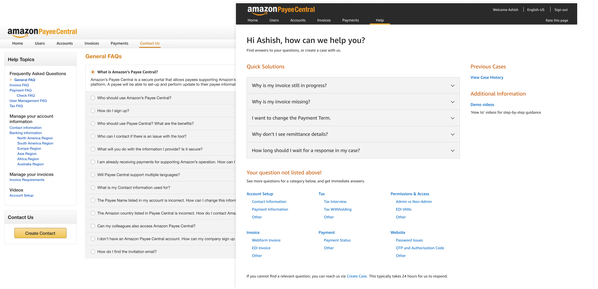
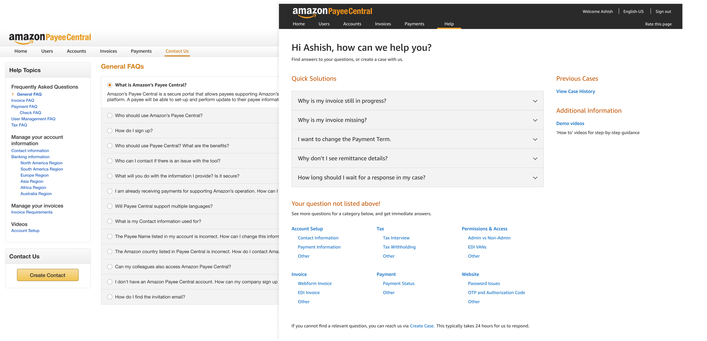
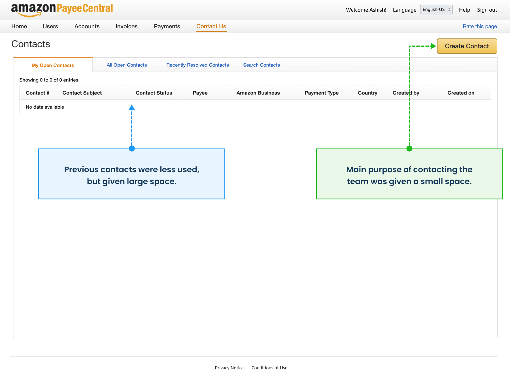
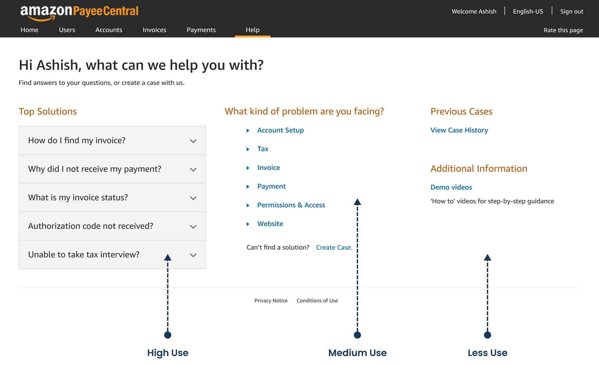

Case Study 03 / Amazon, Payee Central, 2018
Aligning Help page with real user needs
Redesign of Help page so that payees can find answers to their questions quickly and with less assistance.
Case Study 03 / Amazon, Payee Central, 2018
Redesign of Help page so that payees can find answers to their questions quickly and with less assistance.
Context
Payee Central, part of Amazon's Finance Operations, is a self service interface where payees keep track of their invoices and payments.
When payees faced issues in processing of invoices, they could use:
Payees could use 'Contact Us' or Help when they faced a problem.
The service was being launched with new features and in new geographies, so the FinComm team expected an increase in the number of support tickets.
To avoid this situation, the FinComm team wanted to add about 30 new questions which were actually asked by users, to the existing 78 FAQ questions.
The business team in FinOps suggested adding a search to the existing page, and sought help from UX.
The challenge was to align the stakeholders to do a complete redesign.
From UX perspective, I opined that -
The challenge was to align the stakeholders to do a complete redesign.
Stakeholder & Role
Remotes teams in USA and India.
As a UX Designer, with Technology team, I -
My role
Process
Did a UX Audit, and collected examples of best practices.
Collected examples from other teams in Amazon.
UX Audit of Existing Designs
There were two separate entry points: 'Contact Us' & 'Help'. Tooltips appeared when a user logged in for the first time, but a user was unlikely to remember the explanation at the time of use.
FAQs were present in both 'Contact Us' and 'Help'. This created a confusing experience.
'Contact Us' and 'Help' were designed to be separate flows.
FAQs were present on both 'Contact Us' and Help.
UX Audit of Existing Designs
On the 'Contact Us' page, the main function of contacting the team was given a small space.
Less used previous contacts were shown upfront, and given a large space.
Less used previous contacts were given a large space.
On the Help page, the first thing a user would see was General FAQs, which were less helpful.
For the issues likely to be faced, a user had to first find a category from a smaller space.
Less helpful General FAQs were the first thing a user would see.
UX Audit of Existing Designs
Many elements competed for user's attention.
Many elements competed for user's attention. A user had to make too many decisions before typing in the form.
Users were expected to first pick a category on left, then see the FAQs for the selected category to find a solution themselves, and if no solution was available, use the form to contact the team.
FAQs did not match the category selected.
FAQs did not match the category selected.
Ex: Only one question matched for selected category of Banking, other 4 questions were not banking related.
Contact form had redundant fields.
The Contact form had drop-downs which served no purpose when contacting the team, and thus were redundant. They got mis-aligned depending on what was selected, creating a bad experience.
Contact was a confusing term.
The terms 'Create Contact' and 'Submit Contact' were confusing. These did not match the standard words used in industry.
UX Audit of Existing Designs
The paragraphs had a length of nearly 130 characters, which was double the optimal length of 50-75 characters for on screen readability.
Answers were too long to read.
UX Audit of Existing Designs
Some questions were not correctly placed.
Some questions were not correctly placed.
Ex. Question on how to sign-up, when a user was already signed-in.
Contextual Inquiry
Spent 3 days with the FinComm team, watching them resolve various issues, and asking questions when clarification was needed.
Insights from Contextual Inquiry -
Only 8 questions were mostly asked by users.
A user had at most only 1 query at any given time.
At least 2 follows-ups were required to resolve an issue.
Alignment with Stakeholders
Discussed the insights with the stakeholders to arrive at high level decisions before working on the solutions.
High level decisions before solutions.
Metrics to measure improvements.
Simplified Information Architecture
Before: Information Architecture was confusing.
Earlier with 2 entry points, the information architecture was confusing. The content was not in one place, and not in the order of user need.
After: Help content in order of user needs.
Merging of 'Help' and 'Contact Us' simplified the information architecture. All actions for finding help content could be initiated from a single page.
This allowed to place content in order of user need: High, Medium, and Less use.
80% of users could see the top questions upfront, without going deep into rest of the content.
Solution
Made a 3 column layout to put the 3 priority levels of content in order from left to right.
3 column layout for 3 priority levels.
This idea suffered as there was less space to show questions and answers. All sub-categories could not be seen in one glance.
Less space to show answers and sub-categories.
Solution
In the second concept, placed 'Top Solutions' and Categories vertically, thus giving more space for questions and answers. This also gave space to show sub-categories upfront.

Answers at a readable length.
Users could see all sub-categories in one glance.
Enhancements
To measure the quality of answers, used a standard industry practice of asking a feedback question after the answers.
If an answer was not helpful, users could reach out to the team by creating a case.
If an answer was not helpful, users could create a case.
Enhancements
One of the top query by users was to know how much time it would take to resolve an issue.
To give users a sense of the resolution-time, added time-specific labels -
Users wanted to know how much time it would take to resolve an issue.
Solution
Single drop-down to define problem type, clearly placed at top.
Used progressive disclosure to show fields dependent on problem type.
Solution
The FinComm team also planned to show explanatory video solutions for first time users, who needed help setting up their accounts.
I explored how videos could be integrated with text solutions, with long term needs in mind.
Videos on left were not scalable.

More videos can be shown at bottom.
Solution
Lastly, my task was to replace the dummy text in wireframes with the new set of questions and answers. Some of content had a few grammar mistakes, or was not in the right language style.
Though writing content was not expected from me, I had previously studied Amazon's UX Writing Guidelines out of my own interest, and it came helpful in this scenario.
Rewrote 38 of the 40 questions & answers, by -
Used Amazon's Writing Guidelines.
Final Solution
Redesign of Help page by aligning with user needs.
High use content visible upfront.

Medium and low use content placed on other pages.